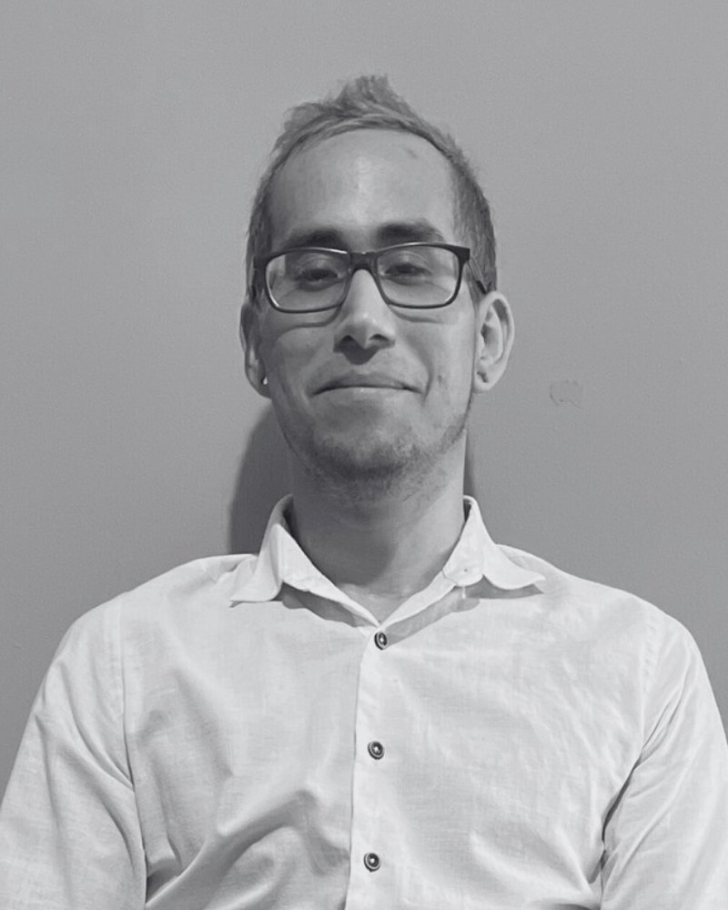

Psicoterapia Gestalt · En línea
Un espacio para entender lo que se repite.
Atiendo a adultos, adolescentes y niños por videollamada. Trabajo desde lo que está pasando ahora — la emoción, el cuerpo, la forma en que te relacionas — no desde consejos ni desde tareas.
Psicólogo titulado · Cédula profesional 13791687 · Formación en psicoterapia Gestalt, Centro Fritz Perls · Monterrey, N.L.

Cómo es
Nadie te dice qué pasa en la primera sesión. Te lo digo.
Cuatro pasos, sin sorpresas. Si en cualquier punto decides no continuar, no hay penalización.
Llamada de 15 minutos
Sin costo. Me cuentas qué te trae y te digo con claridad si lo que ofrezco es lo que necesitas. Si no lo es, te oriento hacia dónde buscar.
Primera sesión
50 minutos por videollamada. Es una valoración: qué está pasando, desde cuándo, qué has intentado. Al final acordamos si seguimos y con qué frecuencia.
Encuadre por escrito
Antes de la segunda sesión recibes el consentimiento informado y el contrato de servicios: confidencialidad, horarios, forma de pago y cómo terminar el proceso.
Sesiones regulares
Normalmente una vez por semana, en día y hora fijos. Revisamos avances cada cuatro sesiones para decidir si el proceso sigue, cambia de ritmo o termina.
Servicios y precios
Precios claros, sin paquetes ni letras chiquitas.
Cada sesión se paga por separado. Puedo emitir factura si la necesitas.
Adultos
Terapia individual
$650
50 minutos
Ansiedad, estados de ánimo, duelos, vínculos, límites y momentos de transición.
13 a 17 años
Terapia adolescente
$700
50 minutos
Con encuadre de confidencialidad reforzada y devolución a los padres cada cuatro sesiones.
8 a 12 años
Terapia infantil
$750
45 min + 15 min con padres
La sesión cierra con una devolución a los padres: qué se trabajó y qué observar en casa.
Menores de 8 años
Asesoría a padres
$700
60 minutos · solo con los adultos
A esta edad la intervención eficaz es con los adultos que están con el niño todos los días.
Grupos
Taller para padres
$350
por persona · 90 minutos · 15 a 20 lugares
Temas como límites sin gritos, pantallas, berrinches y desregulación emocional.
Instituciones
Charla para escuelas y pediatras
Desde $2,500
60 a 90 minutos
Contenido aplicable, con casos concretos y espacio para preguntas del grupo.
Primer contacto
Llamada de orientación
Sin costo
15 minutos
Para que decidas con información. No es una sesión de terapia y no sustituye la valoración.
Forma de pago: transferencia antes del inicio de la sesión. Con factura disponible.
Cancelaciones: con más de 24 horas de anticipación se reprograma sin costo. Con menos de 24 horas, la sesión se cobra. Una cancelación tardía por causa de fuerza mayor al año no se cobra.
Frecuencia: una sesión por semana. No manejo paquetes prepagados ni descuentos por volumen.
Para quién
Con quién trabajo y con quién no.
Decir que no a tiempo también es parte del trabajo.
Adultos
Cuando algo se sostiene en el tiempo y ya lo intentaste de varias formas.
- Ansiedad y sensación de estar siempre en alerta
- Estados de ánimo bajos y pérdida de interés
- Duelos y separaciones
- Dificultad para poner límites
- Decisiones que se postergan
Adolescentes
Espacio propio, con reglas claras sobre qué se comparte con los padres y qué no.
- Irritabilidad y conflictos en casa
- Ansiedad escolar y social
- Autoestima y autoexigencia
- Cambios de escuela o de ciudad
Niños de 8 a 12 años
Sesión de 45 minutos más devolución a los padres. El trabajo con la familia es parte del proceso.
- Berrinches que ya no ceden
- Ansiedad de separación
- Dificultades con la escuela y la frustración
- Cambios en casa: mudanza, separación, llegada de un hermano
Padres de niños menores de 8
Asesoría sin el niño presente, porque a esa edad la intervención eficaz es con los adultos.
- Pautas de crianza y límites
- Berrinches y rabietas intensas
- Pantallas y rutinas
- Acuerdos entre los dos padres
Lo que no atiendo. No doy atención de urgencia ni tengo disponibilidad las 24 horas. No realizo valoración ni tratamiento psiquiátrico ni prescribo medicamentos. No emito dictámenes periciales. Si lo que necesitas requiere alguna de esas cosas, te lo digo en la primera llamada y te oriento hacia el profesional adecuado.
Para padres
Guías breves sobre lo que más trae a las familias.
Escritas desde la consulta, sin promesas milagrosas y con lo que la evidencia sí sostiene.
Ansiedad infantil y sueño
El niño que no duerme no es berrinchudo: tiene miedo. Tres pasos de presencia para bajar la alarma nocturna.
TDAH y culpa paterna
Si gritas, no eres malo: estás saturado. El trabajo con la familia es parte del proceso.
Próximamente
Pantallas sin guerra
Reglas que sí se sostienen: solo 1 de cada 5 familias logra cumplir las suyas.
Próximamente
Sobre mí
Oscar Robledo
Soy psicólogo titulado, con formación en psicoterapia Gestalt por el Centro de Investigación y Entrenamiento en Psicoterapia Gestalt Fritz Perls.
Trabajo desde el aquí y el ahora: lo que sientes en la sesión, lo que tu cuerpo registra, la manera en que te acercas o te alejas de los demás. No creo en las recetas ni en los consejos que se dan sin conocer a la persona.
Crecí alrededor de la medicina — mi padre es pediatra — y de ahí viene mi interés por el trabajo con niños y por la conversación con los padres, que casi siempre son quienes cargan con la duda de si lo que pasa es normal.
- LicenciaturaPsicología · Universidad Regiomontana
- Cédula13791687
- FormaciónPsicoterapia Gestalt · Centro Fritz Perls
- ModalidadEn línea · videollamada
- IdiomasEspañol · Inglés
- UbicaciónMonterrey, N.L. · todo México
Preguntas frecuentes
Las dudas que casi nadie pregunta en voz alta.
¿La terapia por videollamada funciona igual que en persona?
Para adultos y adolescentes, la evidencia es buena y en la práctica funciona bien: la sesión ocurre en un espacio donde la persona ya se siente segura, sin traslados. Para niños pequeños, en cambio, no es el mismo formato — por eso con menores de 8 años trabajo con los padres en lugar de con el niño en pantalla.
¿Cuánto dura un proceso terapéutico?
Depende de qué te trae y desde cuándo. No doy plazos porque no sería honesto: hay procesos que se resuelven en pocas semanas y otros que requieren meses. Lo que sí garantizo es que revisamos cada cuatro sesiones si seguimos, si cambiamos el ritmo o si terminamos.
¿Lo que digo en sesión es confidencial?
Sí, con límites claros y por escrito en el consentimiento informado. La confidencialidad se rompe únicamente en tres casos: riesgo grave e inminente para tu vida o la de otra persona, sospecha de maltrato a un menor o a una persona vulnerable —donde la ley obliga a avisar—, y cuando un juez lo ordena.
Con adolescentes, el encuadre es distinto y se explica a los padres desde la primera sesión: qué se comparte y qué no.
¿Qué pasa si necesito cancelar?
Con más de 24 horas de anticipación, se reprograma sin costo. Con menos de 24 horas, la sesión se cobra, porque ese espacio ya estaba reservado. Una cancelación tardía por causa de fuerza mayor al año no se cobra.
¿Puedo facturar?
Sí, emito factura. Muchos gastos médicos mayores reembolsan consultas de psicología, así que vale la pena preguntar en tu aseguradora antes de la primera sesión.
¿Atiendes urgencias?
No. No tengo disponibilidad las 24 horas ni doy atención de crisis inmediata. Si estás en peligro ahora mismo, llama al 911 o a la Línea de la Vida: 800 911 2000 (gratuita, 24 horas).
¿Cómo se maneja el pago?
Por transferencia antes del inicio de la sesión. No manejo efectivo, ni paquetes prepagados, ni descuentos por volumen.
Contacto
Empieza con quince minutos.
Sin costo y sin compromiso. Me cuentas qué te trae y te digo con claridad si puedo ayudarte o si lo tuyo necesita otro camino.
oscarrobledo1793@gmail.com
Monterrey, Nuevo León · Atención en todo México